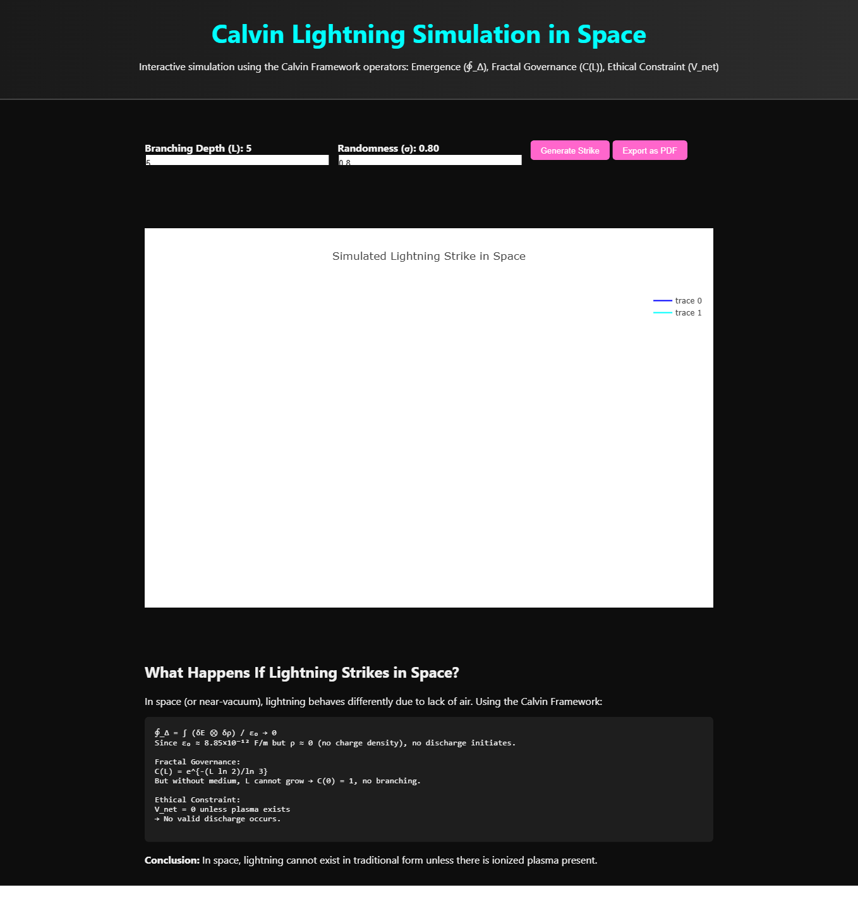

Overview
This simulation uses the Calvin Framework's three core operators:
- Emergence (∮_Δ): Initiates discharge via quantum-encoded field interactions
- Fractal Governance (C(L)): Scales branching structure using fractal decay
- Ethical Constraint (V_net): Ensures physical consistency (Gauss’s Law)
Mathematical Formulas Used
- Emergence:
$ \displaystyle \oint_\Delta \frac{\delta E \otimes \delta \rho}{\varepsilon} > E_{\text{breakdown}} $
- Fractal Governance:
$ \displaystyle C(L) = e^{-(L \ln 2)/\ln 3} $
- Ethical Constraint:
$ \displaystyle V_{\text{net}} =
\begin{cases}
1 & \text{if } \nabla \cdot \mathbf{E} = \rho/\varepsilon_0 \\
0 & \text{otherwise}
\end{cases} $
Simulated Lightning Strike

Code Summary
# Lightning branch generation
def simulate_lightning_branch(pos, level=0, max_level=5):
if level >= max_level:
return [pos]
...